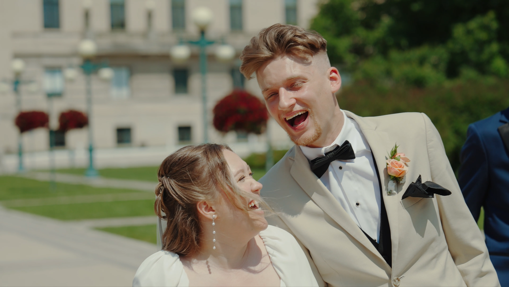
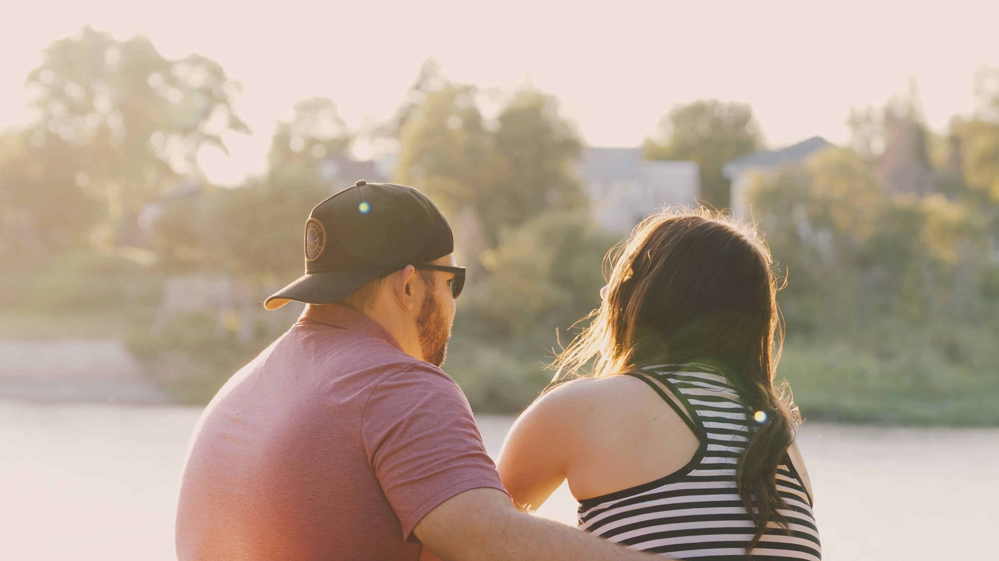
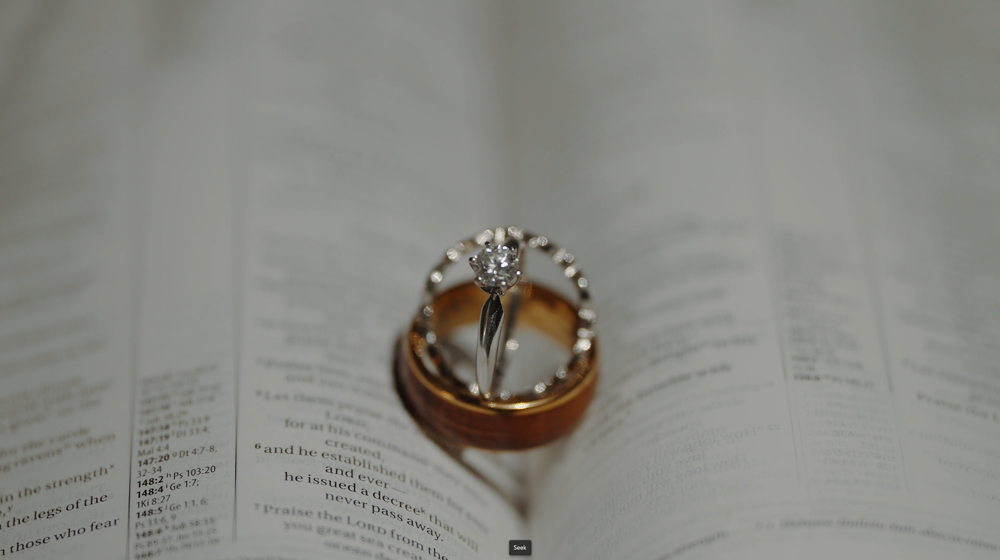
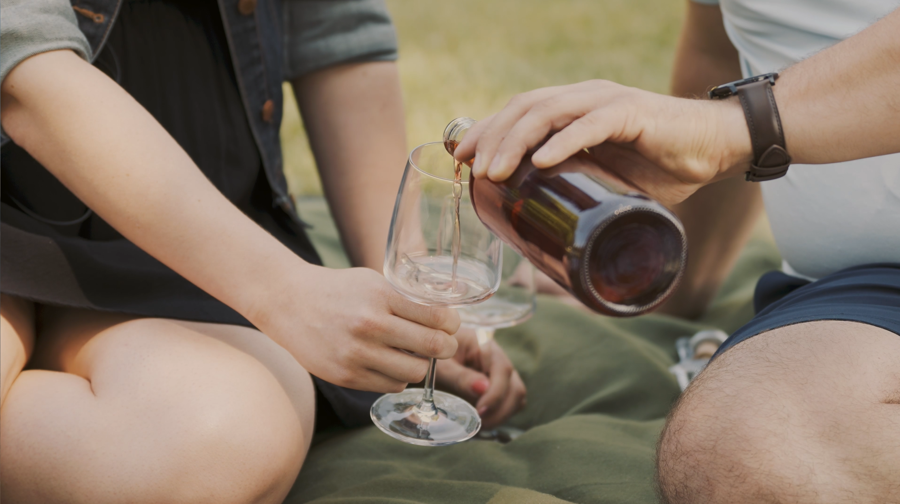

INVESTMENT FILMS WE OFFER:
This is the soul of your wedding story — our signature cinematic piece, beautifully edited to reflect the most meaningful moments of your day. Running between 5 to 10 minutes (depending on your package and coverage), your Highlight Film is thoughtfully woven together with narrative pacing, cinematic visuals, ambient audio, music, and careful color grading. It's more than just a recap — it's a heartfelt keepsake that allows you to relive your day with fresh eyes and a full heart.
These films preserve your vows, your words, and the voices of your loved ones — exactly as they were shared. Unlike our story-driven highlight films, these are more documentary in nature, edited with care using multiple camera angles and professional audio to present your ceremony and speeches in full. They're an honest, unfiltered reflection of the day as it truly happened, making them an essential part of your legacy.
A love letter in motion. This pre-wedding story film is a cinematic exploration of your connection, filmed in a place that feels like home — doing what you love, simply being you. Whether it's a quiet walk at sunset, a cozy moment in your favorite café, or laughter in your living room, we capture the beautiful, unscripted moments that make your love story uniquely yours. Whether shared as a teaser or played at your reception, this film becomes a poetic prelude to your wedding day—a timeless portrait of the love that brought you here.
In addition to weddings, we offer a range of cinematic films to capture other meaningful moments in your life and work. From proposal and engagement films that tell the beginning of your love story, to short teaser videos perfect for save-the-dates or social media, each piece is crafted with care and emotion. We also create personalized films for birthdays, anniversaries, and other celebrations, preserving the laughter and love of your milestones. For creatives and businesses, our promotional and event films bring your brand or gathering to life with a cinematic touch — professional, polished, and story-driven.
What moments were painted with wonder, waiting for your story to unfold?



